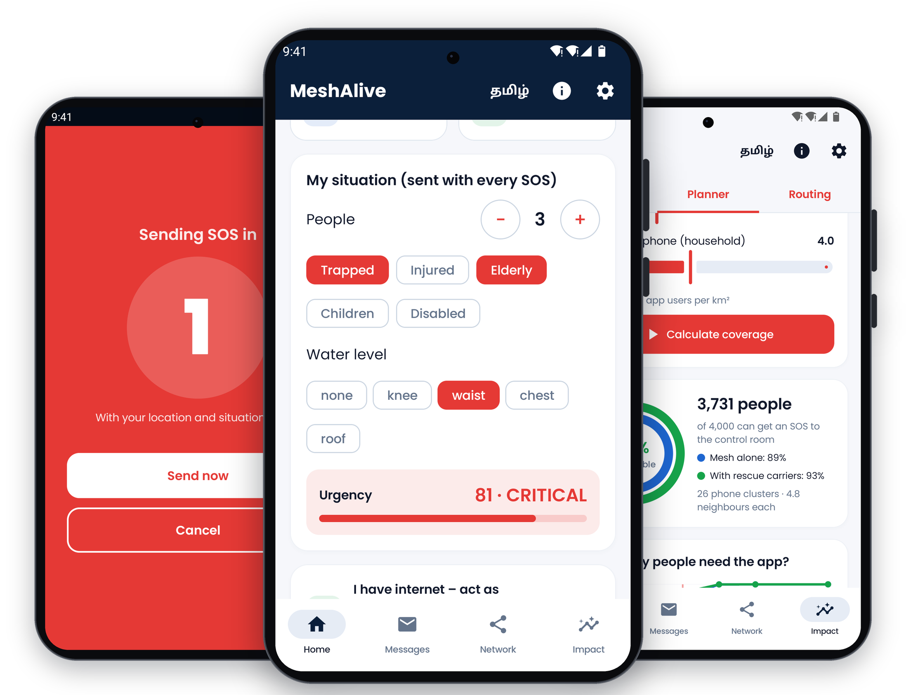
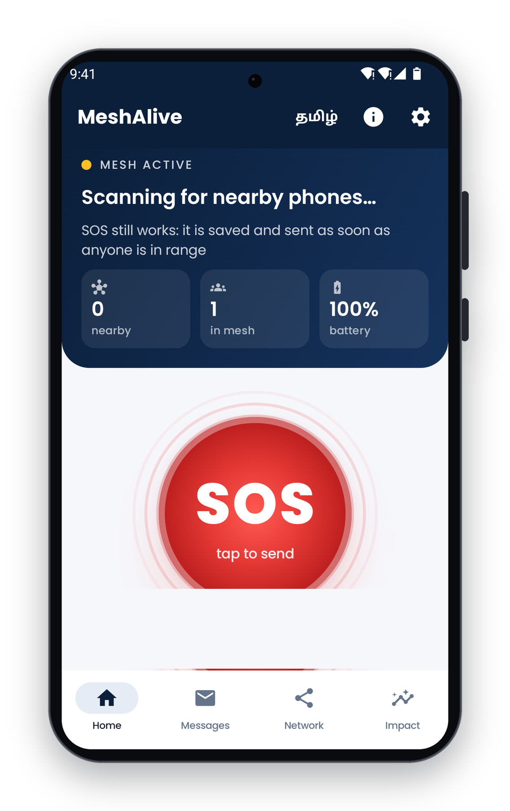
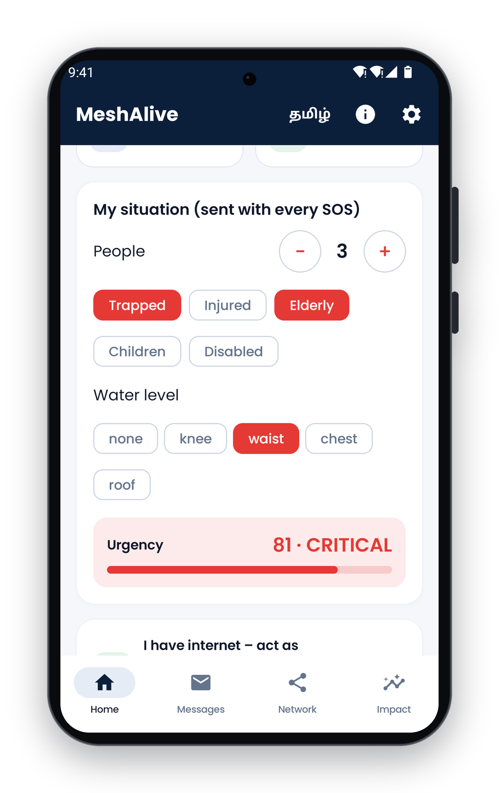
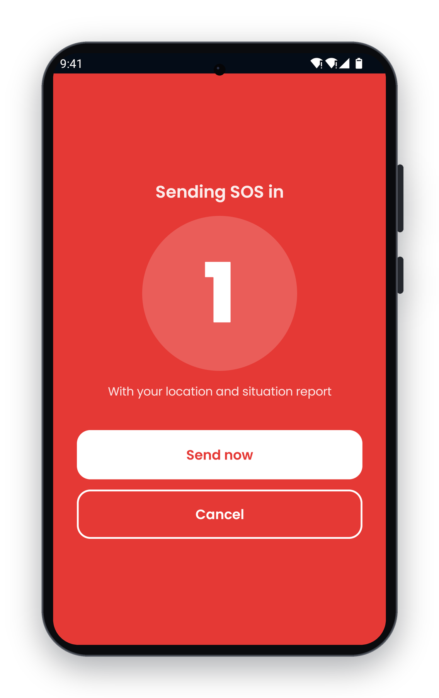
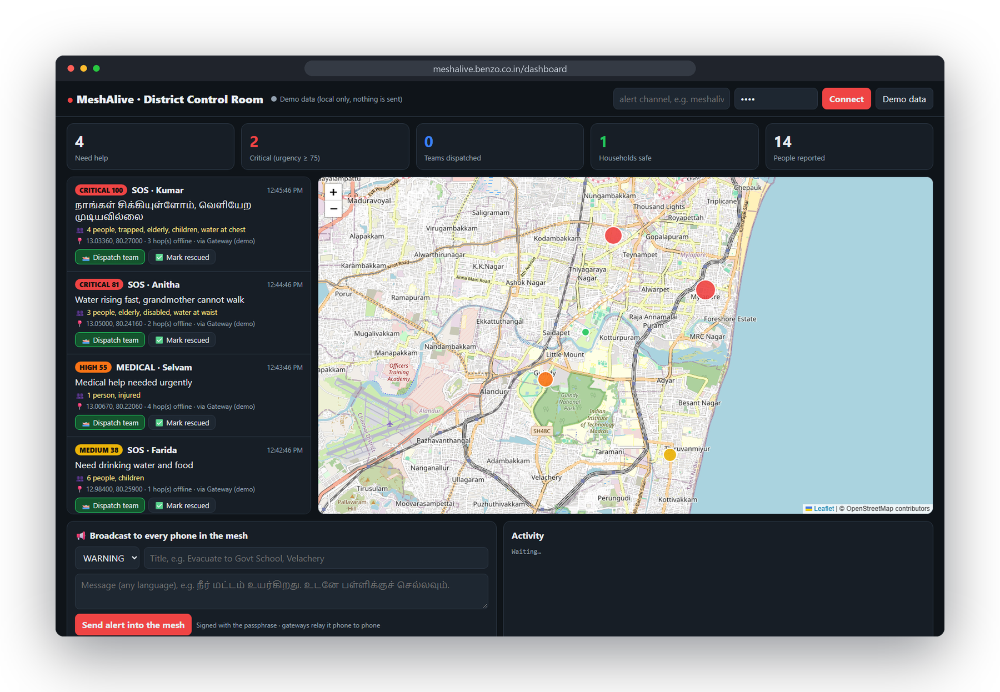
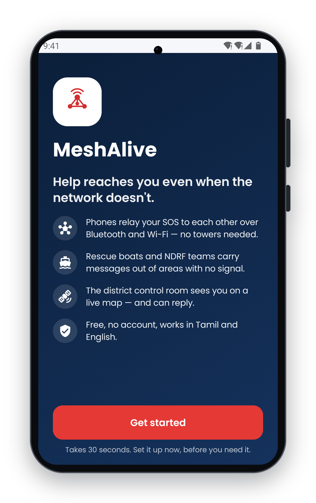
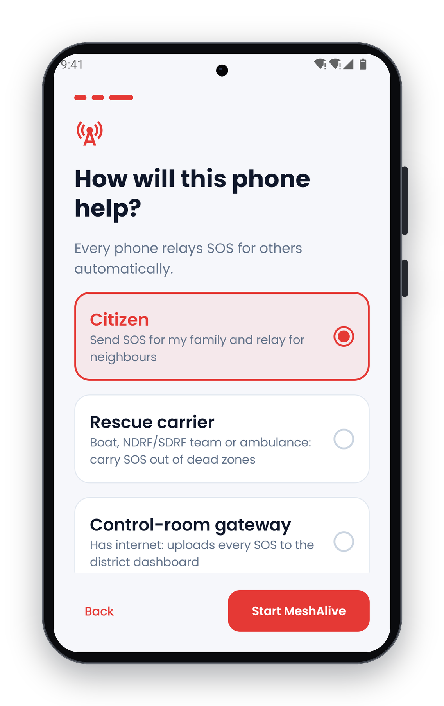
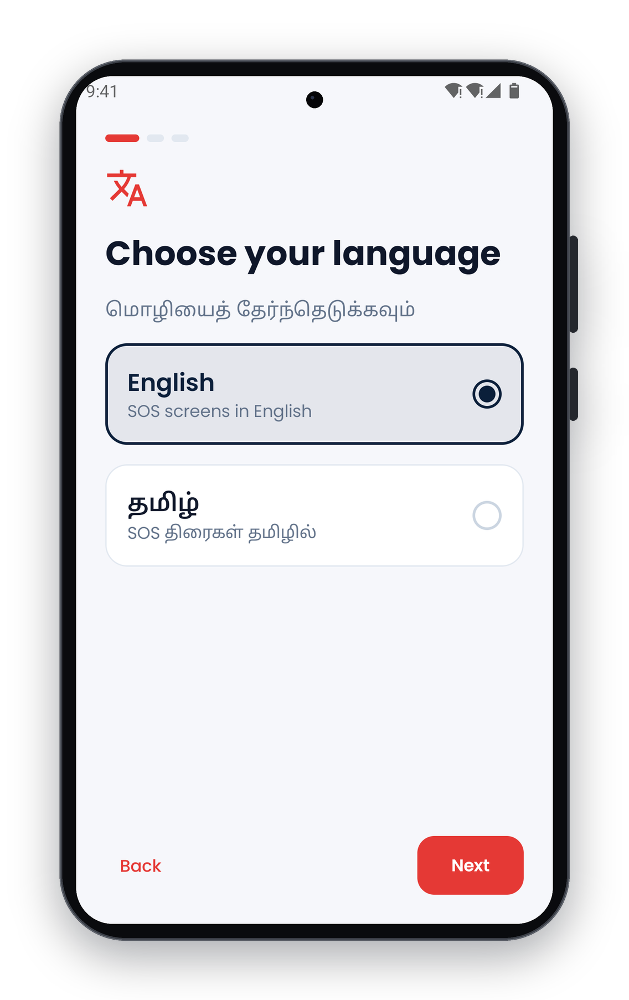

Help reaches you,
even when the network doesn’t.
An offline disaster-response network: when cyclones and floods take down mobile towers, SOS messages travel phone to phone, and through rescue boats and teams, to the district control room. The control room’s answer travels back the same way.
Concept documentTheme 05 · Surakshit BharatTrack A · Product / TechnologyStage · Working prototype

01 · The problem
When the towers go down, rescue goes blind
Every cyclone and flood season, coastal and low-lying districts lose mobile coverage for hours or days. Towers lose power, backhaul links are cut, and the network that remains is overloaded. This happened in the 2015 Chennai floods and again during Cyclone Michaung in 2023.
People in dangerCannot call for help
Trapped families, the elderly, patients and people with disabilities cannot call, text or share their location.
Control roomsWork blind
No view of who needs help, where they are, how many people are with them, or who is most urgent.
Existing appsAre only chat tools
They don’t reach rescuers, don’t prioritise, drain the phones that relay for others, and can’t carry a reply back.
Who is affected, and where
People
- Families in flood- and cyclone-prone areas, especially the elderly, children, people with disabilities and patients
- Fishing communities and low-lying coastal settlements
- Rescue teams (NDRF, SDRF, fire and rescue, boat operators, ambulance crews)
- District Emergency Operations Centres and Disaster Management Authorities
Places
- Coastal districts of Tamil Nadu, such as Chennai, Cuddalore, Nagapattinam and Thoothukudi
- India’s cyclone-exposed east and west coasts
- River-flood regions: Brahmaputra and Ganga basins, Kerala
- Cities where flooding cuts power to mobile towers
Problem statement. When cyclones and floods take down mobile towers and power, people in danger cannot call for help, and district control rooms cannot see who needs rescue, where they are, or how urgent it is.
02 · The solution
A complete rescue loop on the phones people already own
MeshAlive is an Android app plus a browser-based district control room. Together they keep emergency communication working when the mobile network has failed, with no extra hardware.
1 · Ask for helpOne-tap SOS with GPS and a situation report, scored 0–100 for urgency. Tamil and English.
2 · Phones relayBluetooth and Wi-Fi mesh. Battery-aware routing; the most urgent SOS goes first.
3 · Rescuers carryBoats and NDRF teams pick up stuck SOS and carry them out of dead zones.
4 · Control roomThe first phone with signal uploads everything to a live map, sorted by urgency.
5 · Help returnsDispatch and evacuation alerts travel back through the mesh to phones with no signal.
For people in danger
- 30-second guided setup: language, household, role
- SOS with a 3-second countdown and Cancel, so there are no false alarms
- Situation report: people, trapped, injured, elderly, children, disabled, water level → urgency score
- “I’m safe” check-ins so rescuers can skip safe households
- “Rescue team on the way” banner, even with no signal
For rescuers and officials
- Rescue-carrier mode for boats, NDRF/SDRF teams and ambulances
- Any phone that regains signal becomes a gateway automatically
- Live district dashboard: map, urgency, people count, route
- Dispatch team / mark rescued / evacuation broadcast, digitally signed
- Impact tools: field-trial evidence recorder and district coverage planner



03 · District control room
Every SOS on one live map, and help sent back
The dashboard runs in any browser. Each SOS appears with its urgency, people count, triage details, GPS location and the exact route it took through the mesh.

Closing the loop
An operator presses Dispatch team and types a note (“Boat 7 on the way, stay on the roof”). A gateway pushes it into the offline mesh, the victim’s phone shows Rescue team on the way, and the dashboard shows ✓ victim’s phone confirmed.
Evacuation broadcasts
Alerts in any language spread phone to phone to every device in the mesh, and are re-shared with phones that come into range later. Every command is signed with HMAC-SHA256, so fake evacuation orders are rejected.
04 · What is new
A rescue system, not a chat app
| Chat apps (Bridgefy, Briar) | LoRa radios (Meshtastic, goTenna) | MeshAlive |
|---|
| Reaches rescuers | No | No | Live district dashboard |
| Help back to victim | No | No | Dispatch and evacuation alerts through the mesh |
| Prioritises urgent cases | No | No | Triage score 0–100, most urgent sent first |
| No phone in range | Message waits | Message waits | Rescue carriers physically carry it out |
| Battery | Flooding drains phones | Flooding | Battery-aware routing |
| Extra hardware | None | ₹2,500+ radio per person | None |
| Fake alerts | – | – | Signed control-room commands |
| Language | English | English | Tamil and English |
05 · How it works
1 · DiscoveryPhones find each other over Bluetooth and Wi-Fi (Google Nearby Connections) and connect automatically, with no towers or internet.
2 · Network mapEvery few seconds each phone shares its battery, neighbours and internet status. Every phone rebuilds a live map of the mesh and measures link quality (round-trip time).
3 · RoutingBattery-aware Dijkstra: edge cost = link quality + battery penalty + hop cost. A virtual “super-node” joined to all gateways gives every phone its best next hop in one run, O((V+E) log V).
4 · Priority and reliabilityAn urgency priority queue, store-and-forward retries, a duplicate filter, a hop limit (TTL) and delivery receipts (ACKs) with hop count.
5 · Carriers and gatewaysCustody transfer to rescue carriers; any phone that gets internet uploads what it carries.
6 · SecurityAES-GCM encrypted messages; HMAC-SHA256 signed commands from the control room.
07 · Impact, cost and scale
Who benefits, what it costs, how it grows
Beneficiaries and impact
- People trapped or stranded: their SOS reaches rescuers without towers, and they know help is coming
- Vulnerable groups are prioritised automatically by the situation report
- Rescue teams get exact locations, people count and urgency
- Control rooms get a live, prioritised picture and a channel to reach people without signal
District planner (app’s own routing engine): in a 1 km² ward with 1,000 app users (about 4 people per phone), around 3,700 of 4,000 people can reach the control room. This is a model, to be validated in the pilot.
Cost and who pays
| Citizens | ₹0. Free app on their own phone; no SIM, data or account needed for the mesh |
| Rescue carriers | ₹0. Phones that crews already carry |
| Control room | ₹0. Any browser on an existing PC |
| Running | Small hosting cost for a self-hosted alert server; app maintenance |
| Rollout | Pre-monsoon awareness and install drives through the DDMA, which pays |
Implementation and scaling
Phase 1 · 3 monthsField pilot
One flood-prone ward with the District Disaster Management Authority, local NDRF/SDRF boats as carriers, dashboard in the district EOC. Measure delivery rate and SOS-to-dispatch time.
Phase 2District rollout
Install drives through schools, colleges, panchayats, urban local bodies and SHGs. The planner’s adoption curve sets the install target per ward.
Phase 3State and national
Distribution through the SDMA; dashboard feeds into state EOCs via the webhook; alerts aligned with the national Common Alerting Protocol; more Indian languages.
08 · Adoption and support
Who can take it forward, and what we need
Who could adopt it
- District Disaster Management Authorities and District EOCs (primary users)
- State Disaster Management Authorities, such as TNSDMA, for state-wide rollout
- NDMA, for guidelines and integration with the Common Alerting Protocol based alert system
- NDRF, SDRF, and fire and rescue services, as rescue carriers
- Urban local bodies and panchayats, for ward-level drives
- Ambulance services, fishing cooperatives and boat operators
- NGOs and volunteer networks (Red Cross, civil defence); NSS/NCC units
- State IT departments and telecom operators, for hosting and integration
Support we need
- A pilot partnership with a district administration and its DDMA, with access to the district EOC
- Collaboration with NDRF/SDRF and boat operators to field-test carrier mode
- Mentorship in disaster-management operations and public-sector deployment
- Technical guidance: security review, Common Alerting Protocol integration, self-hosting on government infrastructure
- Pilot funding: alert server, test devices, awareness and training drives
- IP guidance and incubation support
MeshAlive: because when the network fails, help shouldn’t.
Website and live dashboard demo: meshalive.benzo.co.in · Source code: github.com/yogeshwardev/MESHALIVE- · Demo video: [link]


